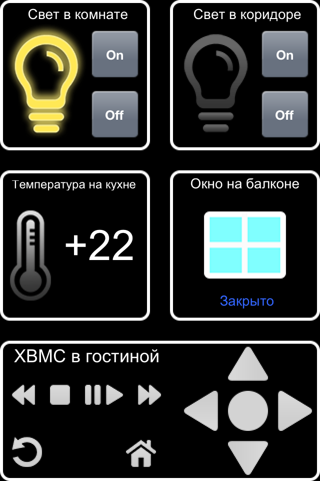

|
This page last changed on May 20, 2013 by aivs.
I made the app with graphics for the resolution of 320x480, on iphone 4 all images are stretched. How to use the high-resolution images image@2x.png?
|
There is currently no support for Retina graphics. We'll be looking in supporting iOS retina devices and Android multiple DPIs configurations.
But I do not understand why images are stretched ?
The resolution you mention is non retina resolution, which is what you should use for now.
You should also use @1x images in your designs and those should appear correctly on an iPhone 4.
Labels, as they are just text, will use the retina resolution of your device when being rendered.

Posted by ebariaux at May 21, 2013 12:12
|
|

I use image @1x, so they are stretched on the iphone
This is original image:
Posted by aivs at May 21, 2013 16:38
|
|
OK, now I see what you mean. When you said stretched, I understood that the images aspect ratio was affected, like the images being elongated or so.
So yes, the images will always be scaled until we have support for Retina devices.
There is no way to support @2x images with the current designer. It is on our road map, but I cannot commit to when this will be done.
Posted by ebariaux at May 23, 2013 10:02
|
|
{kind=link}
{kind=link}